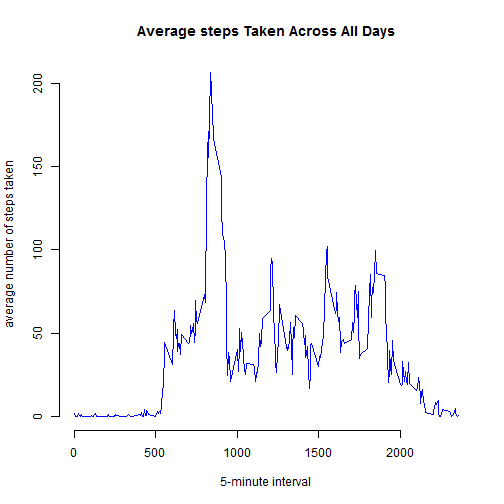
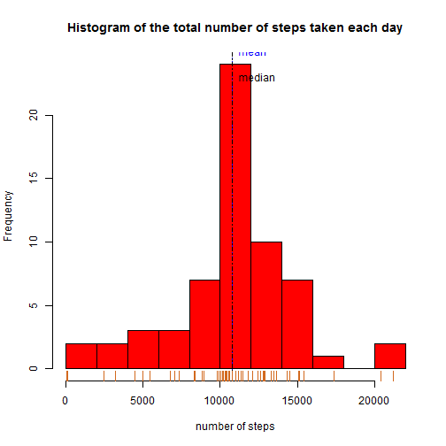

# required packages
library(data.table)
library(lubridate)
library(lattice)
setwd("C:\\RCode")
# Create data folder if it does not exist.
if (!file.exists('data')) {
dir.create('data')
}
activity<-read.csv('data/activity.csv',header=TRUE)
## Warning in file(file, "rt"): cannot open file 'data/activity.csv': No such
## file or directory
## Error in file(file, "rt"): cannot open the connection
steps <- tapply(activity$steps, activity$date, sum)
hist(steps, breaks = 10, col = "red", main = "Histogram of Steps Taken Per Day",
xlab = "Steps Taken Per Day")
#What is mean total number of steps taken per day?
meanTotalSteps <- mean(steps, na.rm = TRUE)
medianTotalSteps <- median(steps, na.rm = TRUE)
meanTotalSteps
## [1] 10766.19
medianTotalSteps
## [1] 10765
#What is the average daily activity pattern? #First get the average of steps per interval
averageSteps <- tapply(activity$steps, activity$interval, mean, na.rm = TRUE)
intervalLevels <- as.numeric(levels(factor(activity$interval)))
plot(intervalLevels, averageSteps, type = "l", col = "blue", xlab = "5-minute interval",
ylab = "average number of steps taken", main = "Average steps Taken Across All Days", frame = F)

#Which 5-minute interval, on average across all the days in the dataset, contains the maximum number of steps?
names(which.max(averageSteps))
## [1] "835"
#Imputing missing values
#Calculate and report the total number of missing values in the dataset (i.e. the total number of rows with NAs)
nbrMissingValues <- sum(is.na(activity$steps))
nbrMissingValues
## [1] 2304
#Create a new dataset that is equal to the original dataset but with the missing data filled in. #Strategy: Fill the missing value with the value from the same interval by using mod288.
newDataSet <- activity
for( i in 1:dim(newDataSet)[1]){
if(is.na(newDataSet$steps[i])){
j <- i %%288
if(j == 0){
j <- 288
}else{
j <- i %%288
}
newDataSet$steps[i] <- averageSteps[j]
}
}
newSteps <- tapply(newDataSet$steps, newDataSet$date, sum, na.rm= TRUE)
hist(newSteps, breaks = 10, col = "red", xlab = "number of steps", main = "Histogram of the total number of steps taken each day")
abline(v=mean(newSteps), lty=3, col="blue")
abline(v=median(newSteps), lty=4, col="black")
text(mean(newSteps),25,labels="mean", pos=4, col="blue")
text(mean(newSteps),23,labels="median", pos=4, col="black")
rug(newSteps, col="chocolate")

#report the mean and median
newMean <- mean(newSteps)
newMedian <- median(newSteps)
newMean
## [1] 10766.19
newMedian
## [1] 10766.19
#Are there differences in activity patterns between weekdays and weekends?
newDataSet$date <- as.Date(strptime(newDataSet$date, format="%Y-%m-%d")) # convert date to a date() class variable
newDataSet$day <- weekdays(newDataSet$date) # build a 'day' factor to hold weekday / weekend
for (i in 1:nrow(newDataSet)) { # for each day
if (newDataSet[i,]$day %in% c("Saturday","Sunday")) { # if Saturday or Sunday,
newDataSet[i,]$day<-"weekend" # then 'weekend'
}
else{
newDataSet[i,]$day<-"weekday" # else 'weekday'
}
}
stepsInterval2 = aggregate(steps ~ interval + day, newDataSet, mean)
xyplot(steps ~ interval | factor(day), data = stepsInterval2, aspect = 1/2, type = "l")